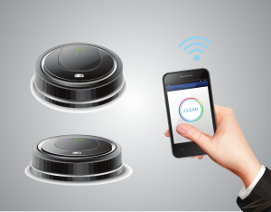
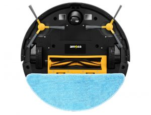

Aspiratoarele robot devin din ce în ce mai populare și multe persoane se gândesc să își achiziționeze unul. De altfel, cine nu ar vrea să se întoarcă acasă după o zi obositoare de muncă și să găsească casa aspirată și curată? Tehnologia acestora a avansat foarte mult în ultimii ani și acum acestea nu doar aspiră ci și spală suprafețele, având integrată o funcție de mop. Majoritatea suprafețelor cum ar fi parchetul, faianța și covoarele vor fi curățate cu o simplă apăsare de buton. Dar, chiar se merită prețul unui robot aspirator? Funcționează într-adevăr așa cum este lăudat de multă lume? Poate el înlocui aspiratorul clasic?
În acest articol vă vom prezenta un top aspiratoare robot cu cele mai bune modele de pe piață. De asemenea vom discuta despre caracteristicile acestora și de ce factori trebuie să țineți cont atunci când achiziționați un aspirator automat. În plus, la final o să vă oferim un scurt ghid de întreținere pentru a vă asigura că noul dumneavoastră aspirator va rămâne ca nou pentru o perioadă îndelungată.
iRobot Roomba 980
Pro
- Își ajustează singur puterea în funcție de suprafață
- Funcție de reglarea automată a înălțimii astfel încât periile să fie mereu la nivelul suprafeței de curățat
- Are un sistem performant de filtrare HEPA
- Potrivit pentru toate tipurile de suprafețe
- Are o aplicație mobilă prin care poate fi controlat și urmărit statusul sesiunii de curățare
- Are senzori ce previn căderea pe scări sau lovirea
Contra
- Poate dărâma unele obiecte ușoare
- Nu are funcție de mop
Recenzia noastră
iRobot Roomba 980 este un aspirator robot premium, elegant și ușor de folosit, cu filtru dublu HEPAp și navigare adaptivă.
iRobot este firma care în 2002 a avut primul succes cu un “aspirator care aspira singur” și care era destinat pentru publicul larg. De atunci și până în prezent aceștia sunt cei care au reușit să inoveze constant industria de aspiratoare robot fiind astfel lideri pe piața mondială, cu peste 30 de milioane de unități vândute.
iRobot Roomba 980 este un aspirator robot care datorită funcțiilor și tehnologiei sale avansate vă va scăpa de timpul pierdut cu aspiratul. Acesta se conectează la Wi-fi iar cu ajutorul aplicației mobile iRobot Home poate fi controlat și programat de oriunde v-ați afla. Tot prin intermediul aplicației puteți să trasați pereți virtuali de care aspiratorul să nu treacă sau zone de protecție ca un arc de cerc care să limiteze accesul acestuia.
Mulțumită funcției Boost Carpet, acesta își mărește automat puterea de aspirare când ajunge pe un covor iar sistemul AeroForce cu trei trepte concentrează fluxul de aer pentru a eficientiza curățarea. Cu ajutorul unei perii cu un unghi de 27 de grade aspiratorul reușește să strângă foarte bine mizeria ce se strânge în colțuri și la marginile pereților.
Filtrarea aerului este realizată printr-un filtru dublu HEPA ce captează 99% din praf, acarieni si alergeni de până la 10 microni. Acest lucru face ca Roomba 980 să fie cel mai bun aspirator robot pentru persoanele care au animale de companie care lasă foarte mult păr prin casă.
Specificații
- Putere de aspirare: 1670 Pa
- Putere: 33 W
- Nivel de zgomot: 60 dB
- Suprafață curățare cu o singură încărcare: 185 mp
- Timp operare: 120 minute
- Capacitate colector: 0.6 l
- Senzori pentru scări: Da
- Înălțime: 9,2 cm
Verifică prețul
Roborock S6 Pure
Pro
- Are sistem LiDAR care asigură o precizie mare
- Are 12 senzori diferiți care oferă diferite funcții inteligente
- Oferă o autonomie de 180 minute și poate curăța o suprafață de 250 mp cu o singură încărcare
- Permite control vocal prin Google Assistant sau Alexa
- Are aplicație mobilă
Contra
- Recipientul pentru apă poate fi prea mic pentru unii utilizatori
Recenzia noastră
Roborock S6 Pure este un robot aspirator cu mop și navigație LiDAR, care se poate conecta la Google Assistant și Alexa.
Roborock S6 Pure vă ajută să vă curățați inteligent casa și aspiră cu ușurință mizeria și firele de păr, atât de pe parchet sau faianță cât și de pe covoare. Datorită sistemului de navigație și orientare LiDAR acesta vă cartografiază casa cu precizie și poate face diferența între camere și etaje. Prin intermediul aplicației mobile puteți alege ca acesta să curețe o singură cameră sau mai multe și chiar și ordinea sau nivelul de aspirare pentru fiecare cameră în parte.
Curățenia nu a fost niciodată mai inteligentă! Cu ajutorul procesorului său puternic care calculează mereu cea mai bună și rapidă rută de curățare și prin intermediul senzorilor, acesta poate evita scările și obstacolele, știind tot timpul unde se află.
Roborock S6 Pure are o putere de aspirare foarte mare mulțumită ventilatorului care, odată cu activarea opțiunii HyperForce, se învârte la 15000rpm. În același timp, dacă umpleți rezervorul de 180ml cu apă acesta poate să dea și cu mopul în urma sa. De asemenea, are un filtru care captează 95% din alergeni, inclusiv mucegaiul, ce nu trebuie înlocuit foarte des deoarece poate fi spălat și refolosit.
Specificații
- Putere de aspirare: 2000 Pa
- Putere: 58 W
- Nivel de zgomot: 67 dB
- Suprafață curățare cu o singură încărcare: 250 mp
- Timp operare: 180 minute
- Capacitate colector: 0.42 l
- Senzori pentru scări: Da
- Înălțime: 9,65 cm
Verifică prețul
IRobot Roomba e5
Pro
- Vine cu sistemul de curățare în 3 etape AeroForce
- Are senzori optici și acustici pentru detectarea zonelor murdare
- Filtru eficient AeroForce, perfect pentru persoanele predispuse la alergii
- Depășește ușor pragurile și alte obstacole de până la 2 cm
- Are funcția HALO prin care se poate îngrădi spațiul său de curățare
Contra
- Vine doar cu un singur filtru de rezervă
Recenzia noastră
Acest robot aspirator oferă o curățare optimă indiferent de suprafață, evidențiindu-se prin calitatea excepțională și varietatea funcțiilor sale încorporate.
Roomba e5 este un robot curatenie extrem de eficient, fiind dotat cu un sistem de curățare AeroForce, o inovație în lumea aspiratoarelor moderne. Acest sistem are 3 etape. Mai întâi, peria sa laterală se ocupă de curățarea minuțioasă, putând ajunge în zonele mai puțin accesibile cum ar fi marginile mobilierului și de-a lungul pereților. Apoi, peria împinge murdăria colectată către cele două perii contrarotative principale, care pot desprinde resturile și murdăria de orice fel, de pe orice tip de suprafață.
În ultima etapă, fluxul puternic de aer dintre cele două perii principale aspiră efectiv murdăria, filtrând în acest proces aerul prin intermediul filtrului AeroForce și captând particulele în coșul colector. De remarcat aici este faptul că filtrul este extrem de eficient, captând chiar și polenul, protejând astfel persoanele sensibile la alergeni.
Pentru navigație, Roomba e5 are sistemul iAdapt, care folosește 42 de senzori diverși prin intermediul cărora strânge date despre împrejurimile sale, reușind astfel să se adapteze în orice spațiu. Tot pentru o navigare mai eficientă, acest robot aspirator vine cu un sistem de detectare a înălțimii, o bară de amortizare care îi permite diferențierea între tipurile de obstacole și un sistem ANTI încurcare pentru a preveni blocarea dispozitivului în cabluri.
Alte lucruri demne de evidențiat sunt posibilitatea de a programa curățarea și faptul că acesta este ușor de întreținut, având perii extractoare din cauciuc rezistent și coș colector refolosibil.
Specificații
- Putere de aspirare: 1700 Pa
- Putere: 33 W
- Nivel de zgomot: 58 dB
- Suprafață curățare cu o singură încărcare: 100 mp
- Timp operare: 90 minute
- Capacitate colector: 0.5 l
- Senzori pentru scări: Da
- Înălțime 9 cm
Verifică prețul
Xiaomi Mi Robot
Pro
- Este un aspirator robot ieftin care, în ciuda prețului, concurează de la egal la egal cu aspiratoarele premium
- Are o capacitate mare de colectare a prafului și mizeriei
- Puterea de aspirare este destul de mare
- Aplicația mobilă este foarte intuitivă
- Are filtre ce se pot spăla
Contra
- Bateria este destul de mică și în modul standard nu reușește să curețe o suprafață mai mare de 120 mp cu o singură încărcare
Recenzia noastră
Xiaomi Mi Robot Vacuum Mop Cleaner este un aspirator robot bun si ieftin care, după cum îi spune și numele, are atât funcția de aspirare cât și cea de mop.
Aspiratorul robot Xiaomi Mi Robot Vacuum Mop Cleaner are un design clasic și elegant și poate aspira și spăla cu ușurință toate tipurile de suprafețe, atât de acasă cât și de la birou. Principalul său atuu este raportul calitate-preț, cei de la Xiaomi fiind cunoscuți pentru acest aspect.
El are o capacitate mare de 0.60 l pentru colectarea mizeriei și un rezervor de apă generos de 200 de ml, ceea ce îl face perfect pentru apartamentele și casele medii, de 50-120 mp. Cablurile sau obstacolele de până la 2 cm înălțime nu vor fi o problemă pentru acest aspirator Xiaomi deoarece poate trece peste acestea cu ușurință.
Cu toate că are o baterie modestă de 2400 mAh, el știe să se ducă și să se conecteze singur la stația de încărcare. După ce și-a încărcat bateria își reia programul de curățare de unde a rămas.
Cu ajutorul aplicației mobile intuitive Xiaomi Home puteți controla și modifica modurile de curățenia ale aspiratorului și chiar monitoriza progresul sesiunilor de curățenie.
Specificații
- Putere de aspirare: 2500 Pa
- Putere: 40 W
- Nivel de zgomot: 72 dB
- Suprafață curățare cu o singură încărcare: 120 mp
- Timp operare: 100 minute
- Capacitate colector: 0.6 l
- Senzori pentru scări: Da
- Înălțime: 8,2 cm
Verifică prețul
amXea D362
Pro
- Are 5 moduri de curățare, oferind opțiunea perfecta pentru orice tip de suprafețe
- Are un design slim, ce îi permite să aspire cu ușurință murdăria din zonele greu accesibile
- Este un aspirator silențios, mulțumită motorului tip brushless
- Are încorporat un filtru cu 3 straturi, unul primar, unul HEPA și unul din bumbac
- Raport calitate-preț foarte bun
Contra
- Accesoriile aspiratorului pot necesita înlocuiri mai frecvente
Recenzia noastră
Robotul aspirator amXea D362 este practic, versatil și multifuncțional, fiind conceput să ajungă în locurile mai puțin accesibile.
AmXea D362 este un aspirator robot ideal pentru orice tip de suprafață, care oferă o gamă variată de funcții și moduri pentru o curățare cât mai eficientă. În primul rând, acesta este un aspirator robot cu spalare permițând curățarea umedă, realizată cu ajutorul unei lavete reutilizabile și al unui rezervor de apă de 300ml. Pentru aspirarea tradițională, de praf și murdărie, acest aspirator are un rezervor puțin mai modest față de alte produse de pe această listă, de 500ml.
În al doilea rând, amXea D362 are 4 moduri de curățare pe lângă cea umedă. Auto execute o curățare în trepte a unei suprafețe mari, Edge este potrivit pentru colțuri, Spot este recomandat curățării intense al unei zone mici, Single Room (sau Daily Schedule) pentru curățările de rutină și Max Mode pentru o curățare mai intensă. Se recomandă să aveți grijă atunci când folosiți curățarea umedă combinată cu modul Max deoarece poate uda excesiv parchetul sau lemnul.
Din punctul de vedere al navigării, acest aspirator robot mai de buget vine cu senzori anti-cădere, ce îi permit să detecteze suprafețele mai joase și senzori anti-coliziune pentru detectarea obstacolelor și estimarea distanțelor. De asemenea, dispozitivul poate fi ghidat prin intermediul unei telecomenzi, utilizatorul având control total asupra robotului, putând astfel schimba modul de curățare sau modifica traseul. Un alt plus notabil este faptul că robotul revine singur în stația de încărcare atunci când mai are puțină baterie sau își termină programul.
Specificații
- Putere de aspirare: 1400 Pa
- Putere: 28 W
- Nivel de zgomot: 58 dB
- Timp operare: 120 minute
- Capacitate colector: 0.5 l
- Senzori pentru scări: Da
- Înălțime: 7 cm
Verifică prețul
Ghid de cumpărare
Nu v-ați decis încă la cel mai bun aspirator robot pentru nevoile dumneavoastră? Un astfel de aspirator poate fi cheia unei case curate. Din fericire există foarte multe modele pe piață, care au o multitudine de funcții pentru a vă scăpa de plictisitoarea sarcină de a aspira și spăla podeaua.
Am făcut următorul ghid pentru cei care încă nu s-au hotărât ce model să aleagă și încă caută “aspirator robot pareri” și sperăm ca prin acesta să le răspundem la toate întrebările și să îi ajutăm să facă alegerea corectă.
Ce este de fapt un aspirator robot?
Imaginați-vă că veniți acasă de la muncă și că găsiți casa aspirată și și podelele spălate. Sau că în weekend stați liniștit pe canapea citind o carte sau uitându-vă la televizor în timp ce casa dumneavoastră este curățată. Nu-i așa că sună bine? Aproape ca un vis. Ei bine, mulțumită progreselor tehnologice din ultimii ani acest vis a devenit realitate pentru foarte mulți oameni, la un preț mai mic decât v-ați aștepta.
Un astfel de aspirator este de fapt un robot cu un motor electric care învârte perii sau role ce adună mizeria. Aceasta va fi aspirată într-un container colector intern care, de obicei nu este mai mare de 0.5 l. Pe lângă funcția de aspirare unele modele mai noi au și funcția de mop, fiind echipate cu un recipient pentru apă și lavete din microfibră reutilizabile.
Aspiratoarele robot nu trebuie să fie conectate tot timpul la o sursă de curent, deci nu au cabluri și nu au mobilitatea îngrădită de poziționarea prizelor din casă. Ele au stații de încărcare și funcționează cu ajutorul unor baterii reîncărcabile, care în funcție de modelul aspiratorului și de capacitatea acestora pot să ofere chiar și o autonomie de 3 ore. Odată descărcată bateria, aspiratorul se întoarce singur la stația de încărcare și își reia programul de unde a rămas după ce și-a reîncărcat bateria.
Acești roboți de curățenie vin echipați cu diferiți senzori care îi ajută să se ghideze prin casă și să evite obstacolele sau să cadă pe scări. Majoritatea pot să se conecteze la rețeaua de internet a casei și au și aplicații mobile prin intermediul cărora puteți să îi controlați sau monitorizați.
Cum se orientează un aspirator robot?
Probabil că și dumneavoastră vă întrebați cum se orientează în spațiu acești roboți și cum știu pe unde au fost și unde trebuie să meargă în continuare? Răspunsul nu este așa de complicat la prima vedere: cu ajutorul unor senzori care ajută la orientarea prin casă. Cu toate acestea, cu cât senzorii sunt mai avansați cu atât aspiratorul robot este mai eficient. Împreună cu partea de software, tehnologia de navigație folosită de fiecare robot în parte determină mișcările acestuia și astfel performanța sa.
În continuare vă vom prezenta trei tipuri de navigație folosite de aspiratoarele robot și care sunt diferențele dintre acestea.
Opțiunea de buget
Aspiratoarele robot ieftine folosesc o combinație de senzori de coliziune, anti-cădere și pentru pereți. De asemenea unele modele au senzori care măsoară rotațiile roților. Astfel, înmulțind circumferința roților și numărul de rotații aceștia calculează ce distanță au parcurs.
Senzorii de coliziune sunt amplasați aproape de barele de protecție iar când acestea lovesc un obstacol senzorii sunt activați și robotul știe că trebuie să își schimbe direcția pentru că acolo este un obstacol. Direcția pe care o va urma este determinată de locul unde a făcut contact cu obiectul. Dacă aspiratorul s-a lovit cu partea dreaptă a barei de protecție acesta știe că trebuie să își schimbe direcția în stânga pentru că a detectat un obiect în dreapta.
Senzorii anti-cădere ajută aspiratorul robot să nu cadă de pe scări și sunt o măsură de siguranță regăsită la toate modelele. Acești senzori măsoară distanța până la podea trimițând semnale infraroșu.
Senzorii pentru pereți, după cum le spune și numele, detectează pereții folosind semnale infraroșu și ajută aspiratorul să se ghideze după aceștia. Astfel acesta poate curăța mizeria strânsă în colțuri și la marginea pereților fără ca să se lovească de ei.
Din cauza faptului că aspiratorul robot acționează doar pe baza semnalelor primite de la acești senzori, el nu reușește să curețe în mod eficient și poate lăsa chiar zone neacoperite. Acest sistem de navigație este folosit de modelele mai vechi sau de cele foarte ieftine.
Aspiratoare robot cu senzori optici sau vizuali
Unele aspiratoare robot combină senzorii amintiți mai sus cu un senzor vizual principal. Aceste aspiratoare folosesc un algoritm de navigație numit VSLAM (localizare simultană vizuală și mapare). Sistemul optic poate identifica mai ușor obstacolele și poate evalua distanța dintre pereți. De asemenea, acest algoritm calculează poziția aspiratorului în cameră în timp real și creează o hartă pe măsură ce curăță. Aceste aspiratoare au o eficiență mai mare deoarece curăță suprafețele într-un mod sistematic și nu vor pierde timpul în zonele unde știu că au mai trecut o dată.
Acest sistem care se regăsește doar pe modelele de aspiratoare robot mai scumpe are un singur dezavantaj și anume acela că are nevoie de o lumină ambientală. Folosindu-se în principal de senzorul optic, aceste aspiratoare vor întâmpina dificultăți în camerele lipsite complet de lumină.
Aspiratoare robot care folosesc navigarea laser
Un alt mod prin care aspiratoarele pot să se orienteze este folosind sistemul LIDAR. Acesta constă într-un laser amplasat pe aspirator care luminează obiectele, permițându-i astfel robotului să calculeze locația acestora și distanța până la ele. De asemenea, acest sistem poate detecta mărimea și forma obiectelor întâlnite de aspirator.
Pereții virtuali și zonele interzise
Cu ajutorul acestor sisteme moderne de navigare și orientare unele modele de aspiratoare robot permit utilizatorului să interzică accesul aspiratorului în anumite camere sau zone. De exemplu, puteți să înconjurați zona în care se află mâncarea animalului de companie asigurându-vă astfel că dispozitivul nu va da din greșeală peste apă. Sau puteți trasa pereți virtuali în fața unor piese de mobilier sub care nu doriți ca acesta să intre.
Aspiratoarele robot versus cele tradiționale
Deși în esență ambele îndeplinesc aceeași funcție, aspiratoarele robot sunt foarte diferite de modele clasice, având atât plusuri cât și minusuri.
Un prim aspect important pentru orice potențial cumpărător este puterea, căci, cu cât un aspirator este mai puternic cu atât curăță suprafețele mai bine. Din acest punct de vedere, aspiratoarele robot tind să nu fie la fel de puternice ca cele tradiționale, în parte deoarece acestea funcționează pe baterie și trebuie să își conserve din energie. Totuși, modelele mai noi de aspiratoare robot reușesc să fie eficiente energetic fără să sacrifice din putere, fiind astfel aproape la același nivel cu cele clasice.
Un alt aspect crucial este performanța aspiratorului pe o gamă variată de suprafețe. Aspiratoarele robot funcționează perfect pe parchet, gresie și linoleum, dar când vine vorba de mochete și covoare pufoase cu fibre lungi, aspiratoarele clasice sunt de preferat. De asemenea, cu cât o podea este mai aglomerată cu atât îi va lua mai mult unui aspirator robot să o curețe eficient, consumându-și astfel mai repede bateria.
Prețul este și el, desigur, un factor decizional important. Aspiratoarele tradiționale sunt mai ieftine decât modelele premium de aspiratoare robot. Însă diferența aceasta de preț se poate explica foarte ușor dacă comparăm funcțiile și caracteristicile aspiratoarele robot cu cele ale aspiratoarelor clasice. Cu aspiratorul obișnuit toată munca în sine este făcută de utilizator, iar singura acțiune efectuată este cea de aspirate. Dispozitivele robot nu au nevoie de intervenția utilizatorului. Majoritatea vin cu moduri și programe speciale de curățare incorporate și pot naviga singure prin spațiul ales, folosind o gamă variată de senzori. Unele modele pot fi programate să curețe anumite zone la anumite ore și vin și cu aplicații prin intermediul cărora pot fi monitorizate și controlate. De asemenea, există aspiratoare robot care au și funcția de mop, cum ar fi Roborock 2, eliminând astfel și mai mult din sarcinile utilizatorului.
O altă caracteristică de interes este mărimea containerului de curățare. Aspiratoarele tradiționale vor avea întotdeauna containere mai mari decât roboții, permițând colectarea unei cantități considerabile de praf, resturi și murdărie. Deci pentru o curățare generală, acestea sunt alegerea potrivită în timp ce aspiratoarele robot excelează în departamentul curățărilor de rutină, care au scopul de a menține curățenia.
Astfel, un robot nu poate înlocui complet un aspirator clasic, micul aparat având limitările sale. Dar funcționează foarte bine ca o completare, studiile de piață evidențiind faptul că folosirea unui robot pentru menținerea curățeniei salvează utilizatorilor în jur de 2 ore pe săptămână din timpul petrecut aspirând.
Se merită să cumperi un aspirator robot?
După cum am menționat mai sus, aspiratoarele robot sunt foarte diferite de cele tradiționale, din multe puncte de vedere, chiar dacă au și ele neajunsurile lor. O întrebare mai bună pe care ați trebui să o aveți în minte este daca un asemenea robot aspirator se pliază sau nu pe nevoile dumneavoastră. Aceste dispozitive vin cu multe avantaje, de la faptul că nu au nevoie de prezența sau intervenția utilizatorului în timpul aspiratului, până la funcțiile în plus pe care le pot oferi, cum ar fi cea de mop. Dar gradul de eficiență al unui aspirator robot ține și ea de anumiți factori iar performanțele sunt mai limitate decât cele ale aspiratoarelor clasice. Haideți să cântărim câteva aspecte pentru a avea o imagine de ansamblu mai bună.
Vă ajută să economisiți timp
Unul din cele mai mare avantaje ale aspiratorului robot este faptul că nu este nevoie să fiți prezent atunci când acesta curăță. Cu aspiratorul clasic tot greul pică pe utilizator. Dumneavoastră îl mânuiți, îl mutați de colo colo și îl manevrați în spațiile mai puțin accesibile, ceea ce de multe ori necesită să vă aflați în poziții incomode. Majoritatea roboților pot fi programați să urmeze un anumit itinerar de curățare, de la ziua și ora la care vreți să aibă aceasta loc, la zonele pe care doriți să le acopere.
Astfel, cu un aspirator robot, de obicei nu este nevoie decât să apăsați pe un buton iar dispozitivul va ști exact ce are de făcut. Modelele mai noi permit și monitorizarea sau controlarea curățeniei prin intermediul unei aplicații sau al unei telecomenzi, în cazul roboților de buget, nefiind nevoie de un contact direct cu aparatul. Aportul utilizatorului ține doar de setarea programelor și de alegerea funcțiilor, nefiind nevoie să depuneți niciun fel de efort.
În general, roboții oferă o curățare eficientă pentru o gamă variată de suprafețe, economisindu-vă astfel timpul dedicat curățatului, însă trebuie să țineți cont că tipul de suprafețe pe care le aveți în casă sau apartament contează foarte mult în acest sens. Roboții excelează în special la curățarea parchetului, gresiei și linoleumului. Dacă aveți mochete sau multe covoare, va fi mai mult ca sigur nevoie să mai treceți o dată cu aspiratorul obișnuit, timpul salvat fiind astfel insesizabil.
O soluție ideală pentru persoanele cu probleme de mobilitate
Pentru persoanele în vârstă sau cele cu dizabilități motorii, aspiratoarele robot oferă soluția ideală, deoarece, cum am detaliat mai sus, acestea nu necesită intervenția fizica a utilizatorului. Pot fi programate să curețe când și unde doriți fără să fie nevoie de un efort din partea dumneavoastră. Utilizatorul asistă doar la operațiunile de întreținere cum ar fi golirea containerului de praf sau înlocuirea filtrelor, care în orice caz nu se compară cu efortul fizic depus în cazul folosirii aspiratoarelor tradiționale.
În cazul în care aveți o casă sau apartament cu etaj, va fi nevoie și să mutați aspiratorul robot de la un etaj la altul pentru că acesta nu poate trece de scări. Din fericire acestea sunt compacte și nu cântăresc mult.
Casa dumneavoastră trebuie să fie compatibilă cu un robot aspirator
Aspiratoarele robot funcționează doar pe suprafețele plane, deci, dacă aveți praguri înalte (de obicei peste 2 centimetrii, dar fiecare dispozitiv vine cu specificații în acest sens) s-ar putea ca procesul de curățare să nu fie tocmai unul lin. Totuși, dacă sunteți dispus să îi dați robotului o mână de ajutor, există câteva soluții pentru a rezolva problema pragurilor. Una ar fi să plasați o rampă în fața pragului. Există rampe speciale pentru aspiratoarele robot care pot fi cumpărate în comerț dar aveți și varianta să improvizați. Căutați opțiuni care să nu aibă o înclinație prea abruptă sau să fie prea înguste, ca să va asigurați că robotul va putea trece peste. Dacă pragul este doar o idee prea înalt, încercați să puneți un covoraș înaintea lui. Acesta îi va oferi aspiratorului robot tracțiunea necesară pentru a trece pragul.
Scările sunt și ele o problemă deoarece aspiratorul nu le poate escalada. Varianta cea mai eficientă ca timp este să curățați treptele manual și să duceți dumneavoastră robotul la etajul la care doriți să își urmeze programul. Acest lucru scade puțin din bucuria de a avea un aspirator robot, deoarece nu se va putea descurca fără dumneavoastră, dar, efortul depus rămâne indiscutabil mai mic decât în cazul aspiratoarelor clasice.
O ultimă problemă legată de folosirea unui aspirator robot este că necesită puțină pregătire. Înainte să porniți dispozitivul este recomandat să strângeți de pe podea toate lucrurile în care robotul ar putea rămâne blocat sau care l-ar înfunda. Aspiratoarele robot se pot încurca ușor în cabluri nearanjate sau chiar în perdele, deși există modele care se descurca mai bine în fața acestor obstacole. Cât despre obiecte ce pot înfunda aspiratorul, aveți grijă la articolele de îmbrăcăminte și jucăriile mici ale copiilor sau animalelor de companie.
Cum rămâne cu praful de pe rafturi?
Aspiratorul robot are limitele sale când vine vorba de locurile în care poate ajunge. Deci, pentru a avea o casă “strălucitor” de curată nu vă puteți baza doar pe acest dispozitiv. El nu va ajunge niciodată la praful de pe rafturi, dulapuri, sau chiar la banalele scări după cum am explicat anterior. Pentru suprafețele care depășesc limitele de navigație ale unui robot aspirator, metodele clasice rămân alegerea potrivită. Aspiratorul clasic poate fi manevrat cu ușurință pe scări și, cele cu furtunul mai lung sau verticale vă pot scăpa cu ușurință de pânzele de păianjen. Pentru praful și particulele de pe rafturi și dulapuri, o lavetă sau un pămătuf de praf rămâne soluția ideală.
Robotul poate deci face doar o parte din curățenia general. Însă, dacă faceți efortul să îl integrați în programul dumneavoastră de curățenie, vă va economisi cu siguranță câteva ore bune de efort.
Se merită să investești într-un aspirator robot?
Chiar dacă nu sunt bune la toate și necesită din când în când puțin ajutor din partea utilizatorului, aspiratoarele robot rămân o investiție de care vă veți bucura din plin. Indiferent de performanța lor, acestea sunt dispozitive eficiente de economisire a timpului și dacă le folosiți și întrețineți corect nu veți regreta această achiziție.
Cele mai importante caracteristici ale unui aspirator robot
Nu este ușor să căutați și să alegeți un aspirator robot care să aibă toate caracteristicile de care aveți nevoie. Trebuie să țineți cont de multe aspecte cum ar fi puterea de aspirare, modurile de aspirare, tehnologia folosită la navigare, filtrele și prețul. De aceea, mai jos vă vom prezenta trei lucruri esențiale pe care trebuie să le știți atunci când alegeți un aspirator robot bun si ieftin.
Puterea de aspirare
Puterea de aspirare este cel mai important lucru de care trebuie să țineți cont atunci când alegeți un robot de curățenie. Aceasta se măsoară în Pascali (Pa) și cu cât este mai mare cu atât robotul va avea mai multă putere să aspire mizeria.
Modurile de aspirare
Fiecare producător vine cu modurile sale de aspirare diferite. De exemplu, cei de la iRobot au funcția Boost Carpet care mărește automat puterea de aspirare atunci când robotul detectează că se află pe un covor. Un alt exemplu bun sunt cei de la amXea care au cinci moduri de curățare diferită care se potrivesc cu toate tipurile de suprafețe asigurându-se astfel o curățare cât mai eficientă.
Tehnologia de navigare
După cum am menționat mai devreme, tehnologia folosită pentru navigare și ghidare prin casă determină foarte mult eficiența acestor aspiratoare robot. Cele cu senzori optici sau care folosesc navigarea laser sunt mai scumpe dar și mult mai eficiente decât roboții care folosesc doar senzori de coliziune.
Autonomia bateriei
Dacă un model de aspirator robot are o autonomie a bateriei mai mică de 60 de minute, acesta este un semn al performanței scăzute. Este indicat să alegeți un model care vă poate curăța întreaga casă cu o singură încărcare sau care să știe să se întoarcă singur la stația de încărcare și să își reia programul de unde a rămas, odată ce s-a încărcat. În funcție de model, aspiratoarele robot au nevoie de 1 până la 3 ore ca să își reîncarce bateria.
Sistemul de filtrare
Un alt aspect important de care trebuie să țineți cont este sistemul de filtrare cu care vine fiecare model de aspirator robot în parte. Îndeplinește acesta standartul HEPA? Trebuiesc filtrele înlocuite periodic sau se pot spăla și refolosi? Acestea sunt întrebări de care trebuie să țineți cont și la care am răspuns la fiecare produs prezentat în acest articol.
Funcții de programare
Funcțiile de programare pot fi un plus, deoarece vă permit să setați și programați ore și zile ale săptămânii în care doriți ca aspiratorul robot să înceapă curățenia. Astfel nu contează unde vă aflați, acesta va porni singur și veți găsi mereu casa curată.
Controlul de la distanță / Aplicație mobilă

Majoritatea modelelor lansate în ultimii ani pot fi controlate de la distanță cu ajutorul aplicațiilor mobile. Aspiratorul robot poate să se conecteze la internet prin Wi-Fi-ul casei și astfel puteți să îl controlați cu telefonul de oriunde vă aflați. Îl puteți opri, porni, pune pe pauză, programa un orar de curățenie sau chiar vedea în timp real unde se află acesta și ce zone a terminat de curățat. De asemenea, tot prin aplicația mobilă puteți vedea statusul bateriei sau primi notificări de la aspirator, cum ar fi dacă a terminat de curățat sau dacă a rămas blocat într-o anumită zonă.
Modelele mai vechi sau cele foarte ieftine vin cu o telecomandă prin care puteți controla și seta aspiratorul robot.
Nivelul de zgomot
Nivelul de zgomot se măsoară în decibeli (db) și poate fi un aspect care nu este luat în calcul de multe persoane pentru că sunt obișnuite cu aspiratoarele clasice, gălăgioase. Însă, acesta poate fi important și ar trebui să fie în atenția celor care au animale de compania sau care vor ca aspiratorul robot să curețe noaptea. Majoritatea modelelor mai noi au un nivel de zgomot cuprins între 60 și 70 db, un pic mai scăzut față de aspiratoarele clasice care au între 80 și 90 db.
Detectarea scărilor
Senzorii anti-cădere sunt un alt element important pe care un aspirator robot trebuie să îl aibă și de care trebuie să țineți cont mai ales dacă aveți o casă cu mai multe etaje. Acești senzori detectează scările sau orice schimbare de nivel și ajută astfel aspiratorul să nu cadă.
Alte funcții
Înălțimea
Un alt lucru important este înălțimea aspiratorului robot. Cu cât înălțimea acestuia este mai mică, cu atât va încăpea pe sub mai multe obiecte de mobilier, scăpându-vă astfel pe dumneavoastră de făcutul curățeniei în plus.
Funcția de mop
O funcție importantă și dorită de foarte mulți oameni este cea de mop. Dispozitivele care au această funcție au un recipient mic cu apă și lavete din microfibră care pot fi spălate și refolosite. La majoritatea modelelor, apa din recipient este folosită pentru a se îmbiba laveta și astfel robotul poate să aspire și să spele în același timp.

Pereți virtuali
După ce aspiratorul robot a făcut o hartă a casei tale, cu ajutorul aplicației mobile puteți trasa pereți virtuali sau zone în formă de semicerc prin care să restricționați accesul dispozitivului într-o anumită cameră sau, de exemplu, în jurul mâncării și apei animalului de companie.
Control Vocal
Unele aspiratoare cum ar fi Roborock S6 Pure pot fi conectate la Google Home sau Alexa, oferindu-vă astfel opțiunea să folosiți comenzi vocale pentru a le controla.
Aspecte care trebuie luate în considerare înainte să cumpărați un aspirator robot
Aspiratoarele robot nu sunt cele mai scumpe electrocasnice de pe piață dar reprezintă totuși o investiție financiară substanțială. Tocmai din acest motiv, decizia de a achiziționa un astfel de dispozitiv trebuie să fie una informată și bazată pe o cântărire atentă a beneficiilor și minusurilor.
În acest articol v-am prezentat cele mai bune modele de pe piață, care sunt diferențele dintre acestea și aspiratoarele clasice și cu ce caracteristici și funcții vin acestea. Dar haideți acum să trecem în revistă și câteva întrebări la care ar trebui să vă gândiți înainte să luați o decizie finală.
Cât de mare este casa dumneavoastră?
Aspiratoarele robot funcționează pe baterie, deci, cu cât aveți mai mult spațiu care necesită aspirat cu atât se va consuma mai repede bateria unui asemenea dispozitiv. Astfel, dacă aveți o casă mai spațioasă, trebuie să vă orientați spre un model de robot cu o autonomie mare a bateriei, ca să vă asigurați că acesta va putea duce la bun sfârșit sesiunea de curățat.
Ați putea merge și pe un model cu o baterie mai mică atâta timp cât acesta are funcția de reîncărcare automată atunci când aceasta se consumă. Toate aspiratoarele incluse în lista noastră au această funcție.
Aveți parchet sau covoare?
În general, toate modelele de aspiratoare robot sunt eficiente în curățarea suprafețelor plane, în special a parchetului, gresiei și al linoleumului. Dar, dacă aveți mochetă sau covoare pufoase, atunci este foarte probabil ca modelele de buget să nu aibă cea mai bună performanță. Acestea pot rămâne ușor blocate în fibrele lungi ale covoarelor sau pot să își consume foarte repede bateria traversând mochetele.
Modelele mai scumpe au o performanță mai bună când vine vorba de aceste suprafețe mai complicat de curățat, dar nici acestea nu se pot compara cu performanțele aspiratoarelor clasice.
Aveți animale de companie?
Prezența animalelor de companie poate pune multe obstacole în fața unui aspirator robot. Pe lângă faptul că dispozitivul trebuie să evite mâncarea, apa, litiera sau jucăriile acestora, mai există și problema părului. Atât câinii cât și pisicile lasă păr, iar unele aspiratoare robot nu sunt făcute pentru a-l gestiona. Blana rămâne blocată în peria rotativă iar dispozitivul se înfundă, nereușind să își continue programul.
Dacă aveți animale de companie, alegeți un model cu perii din material cauciucat, cum ar fi iRobot Roomba e5, deoarece acestea pot aspira părul fără ca sistemul lor să se înfunde.
Care este bugetul dumneavoastră?
Există o gamă variată de aspiratoare robot pentru orice categorie de buget. Desigur, modelele mai ieftine nu sunt la fel de puternice sau eficiente ca cele mai scumpe iar majoritatea vin doar cu câteva funcții de bază. Dacă vă doriți ceva bun care să nu treacă totuși pragul către opțiunile scumpe, orientați-vă către modelele de mijloc. Acestea vin cu performanțe asemănătoare cu cele ale roboților premium, minusul constând într-o gamă mai restrânsă de funcții.
Cât de mult timp poate rezista un aspirator robot?
În general, aspiratoarele robot pot ține până la 5 ani dar, durata de viață a acestor dispozitive depinde foarte mult de modul în care este întreținut. Cu alte cuvinte, cu cât sunteți mai atent și grijuliu cu acesta, cu atât va rezista mai mult timp. Iată câteva sfaturi utile pentru a vă ajuta să vă bucurați de aspiratorul robot pentru o perioadă cât mai îndelungată.
Nu îl lăsați să se umple prea mult
Containerele de colectare a aspiratoarelor robot sunt de obicei foarte mici, în jur de 500 ml, ceea ce înseamnă că se umplu relativ repede. Este recomandat să goliți și curățați aceste containere măcar o dată pe săptămână, în special dacă îl folosiți în mod regulat.
Curățați filtrele
Aspiratoarele robot pot veni cu un filtru simplu HEPA, cu unul dublu cum are iRobot Roomba 980 sau cu unul din mai multe straturi, cum este cazul modelului amXea D360-B. Aceste filtre se pot încărca și înfunda repede și trebuie să le acordați o atenție specială. Din fericire, majoritatea acestora pot fi spălate și refolosite.
Curățați periile
Este un obicei bun să verificați periile după fiecare folosire sau o dată la câteva folosiri pentru a vă asigura că totul funcționează cum trebuie, în special dacă aveți animale de companie sau părul lung. Blana și firele lungi de păr se pot încurca ușor în perișorii acestora, îngreunându-i funcționarea și ducând pe termen lung la deteriorarea robotului.
Concluzie
În acest articol v-am prezentat lista noastră cu cele mai bune dispozitive de pe piață menționând inclusiv aspirator robot pareri și aspirator robot pret, am explicat ce sunt mai exact aceste dispozitive și cum funcționează și le-am comparat cu aspiratoarele tradiționale. Apoi, am analizat dacă acești roboți își merită banii, am vorbit pe larg despre caracteristicile aspiratoarelor robot și am făcut o listă de factori cu impact în procesul decizional. Ca bonus, v-am oferit și câteva sfaturi legate de întreținerea unui asemenea dispozitiv, ca să vă puteți bucura de el “de toți banii”.
Am făcut tot ce ținea de noi iar acum totul depinde de dumneavoastră. Se merită să faceți această investiție? Care este modelul perfect pentru dumneavoastră? Sperăm că v-am ajutat să răspundeți la aceste întrebări!
List:
- perăm că v-am ajutat să răspundeți la acest
- perăm că v-am ajutat să răspundeți la acest
- perăm că v-am ajutat să răspundeți la acest
- perăm că v-am ajutat să răspundeți la acest
Numbered list:
- perăm că v-am ajutat să răspundeți la acest
- perăm că v-am ajutat să răspundeți la acest
- perăm că v-am ajutat să răspundeți la acest
- perăm că v-am ajutat să răspundeți la acest